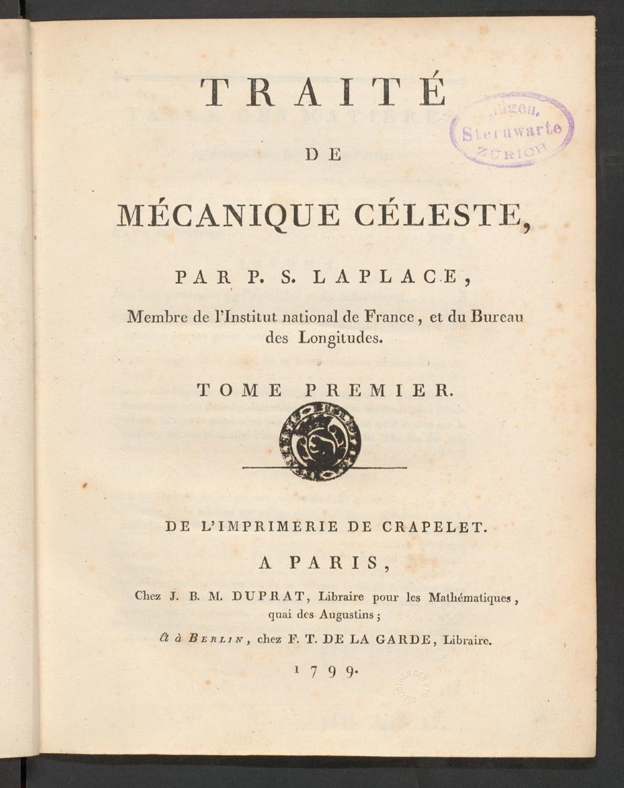
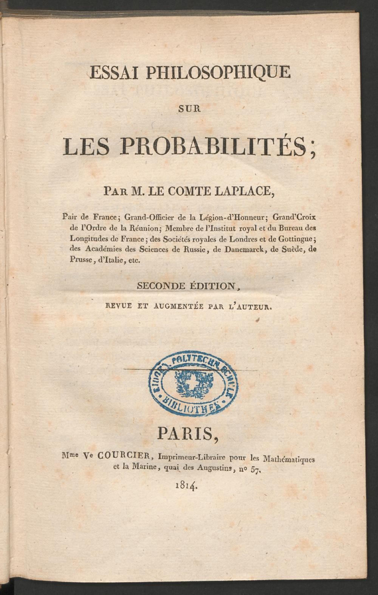

57:15 · 2 OPERE
Lezione introduttiva sulla catena di causalità.
Il filo del discorso
La lezione propone di pensare il rapporto fra causa ed effetto come una catena, nella quale uno stesso evento può avere più funzioni e più conseguenze. Dr Divago parte dalle biglie di Newton e dal programma deterministico attribuito a Laplace: conoscendo uno stato del sistema, si vorrebbero ricavare gli stati successivi. Il passaggio alla fisica moderna introduce poi indeterminazione, probabilità e limiti della misura. Le note distinguono i problemi che nel parlato vengono accostati: errore strumentale, indeterminazione quantistica, determinismo delle equazioni e prevedibilità effettiva non coincidono. Il paradosso di Olbers e la geometria di un terreno servono a discutere la scala alla quale un modello funziona. Una descrizione può essere utile entro una approssimazione senza esaurire la struttura del mondo. La caduta di una spugna viene così letta sia attraverso la gravitazione newtoniana sia attraverso la relatività. L’ascensore di Einstein e il confronto fra aereo e simulatore portano al ruolo della esperienza e degli strumenti nel riconoscimento di una situazione. Alcune formulazioni del relatore richiedono precisazioni, come la distinzione fra velocità e accelerazione e il carattere locale del principio di equivalenza. La riflessione sulla percezione passa ai colori, alla solidità e al bastone che appare spezzato nell’acqua. Dr Divago intende mostrare che una descrizione scientifica può modificare ciò che sembrava immediatamente evidente. Non ne segue che il mondo dei solidi o dei colori non possa essere studiato scientificamente. Il corvo nello zoo di Copenaghen introduce invece il problema dell’induzione: una regolarità osservata non garantisce senza altre ragioni una proposizione universale. La percentuale del 99,9per cento è un esempio del relatore, non una statistica zoologica verificata. Nella parte centrale della lavagna la catena viene rappresentata con lettere, vettori e una relazione probabilistica riconoscibile come formula di Bayes. Il contributo chiede che cosa accada quando si racconti un effetto cancellando il suo antecedente. Dr Divago applica questa domanda alla guerra di Gaza e al7ottobre, con un giudizio polemico sui manifestanti. La scheda distingue la sua lettura politica da una dimostrazione matematica: ricostruire un antecedente non prova una causa unica, non stabilisce le intenzioni di tutti gli interlocutori e non giustifica automaticamente ogni azione successiva. Il punto conclusivo è il ruolo doppio di ogni anello. Ciò che appare come effetto rispetto a un evento può essere causa rispetto a un altro; il passaggio non è una contraddizione, ma un cambiamento della relazione considerata. Il relatore allarga poi la sequenza alle ramificazioni della vita sociale, all’effetto farfalla e alla serendipità. È una proposta divulgativa per rendere più attenta la lettura degli eventi, senza una derivazione completa dei modelli evocati. Tenere distinti gli esempi fisici, la probabilità e la analisi causale consente di conservare la domanda filosofica della lezione e di valutarne meglio i limiti.
I libri nel discorso

Traité de mécanique céleste
Frontespizio del tomo primo: Opera pubblicata in cinque tomi dal 1799 al 1825. Immagine: frontespizio del tomo primo, Parigi, imprimerie de Crapelet, J.B.M.Duprat; Berlino, F.T.de la Garde,1799. ETH-Bibliothek Zürich, Rar8684, DOI10.3931/e-rara-42484, Public Domain Mark, canvas12306806. Il singolo frontespizio non rappresenta tutte le legature o edizioni dell’opera.
Frontespizio autentico del tomo I1799, non copertina esterna e non immagine di tutti i cinque tomi. ETH-Bibliothek Zürich, Rar8684,https://doi.org/10.3931/e-rara-42484/ Public Domain Mark.
Laplace e la Meccanica celeste sono espliciti nel racconto su Napoleone.
Passaggio 4:49 ↗ · Fonti e libro ↗
Essai philosophique sur les probabilités
Identificazione probabile
Frontespizio della seconda edizione: Frontespizio autentico della seconda edizione rivista e aumentata, Parigi, Mme Ve Courcier,1814,190 pagine nel catalogo ETH. ETH-Bibliothek Zürich, Rar5003, DOI10.3931/e-rara-3684, Public Domain Mark, canvas1090753. Non copertina esterna, non prova della edizione usata dal relatore.
Frontespizio autentico 1814, non copertina esterna. ETH-Bibliothek Zürich, Rar5003,https://doi.org/10.3931/e-rara-3684/ Public Domain Mark.
La intelligenza che conosce uno stato e ne deriva passato e futuro rimanda probabilmente all’Essai philosophique sur les probabilités; titolo non pronunciato.
Passaggio 5:57 ↗ · Fonti e libro ↗